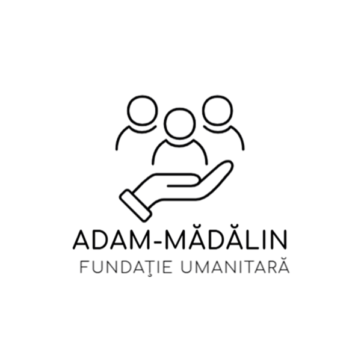
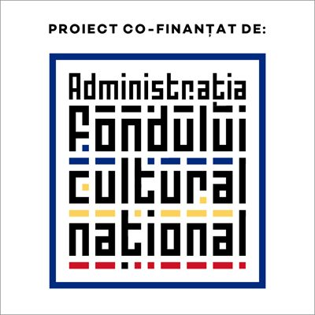
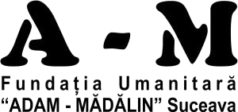
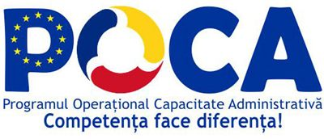
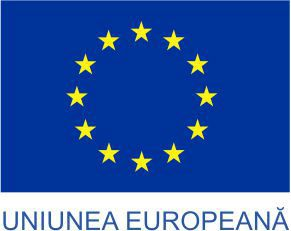
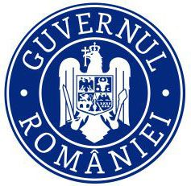

Suceava – monumente și istorie
51.800 lei

Fundația Umanitară „Adam-Mădălin” este o organizație neguvernamentală din Suceava, înființată în 1995. Sprijinim elevi și studenți, documentăm și promovăm patrimoniul cultural al Bucovinei, derulăm proiecte de educație pentru mediu și de participare cetățenească, alături de parteneri locali și naționali.

* Suma valorilor totale ale proiectelor implementate de fundație ca solicitant și a celor în care a fost partener.







Consiliul Județean Suceava · Fundația de Caritate și Întrajutorare „ANA” · Colegiul Economic „Dimitrie Cantemir” Suceava · Muzeul Național al Bucovinei · comunitățile huțulilor și germanilor din Bucovina.